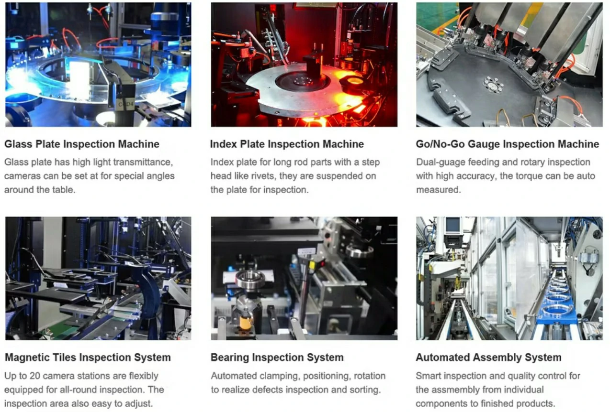
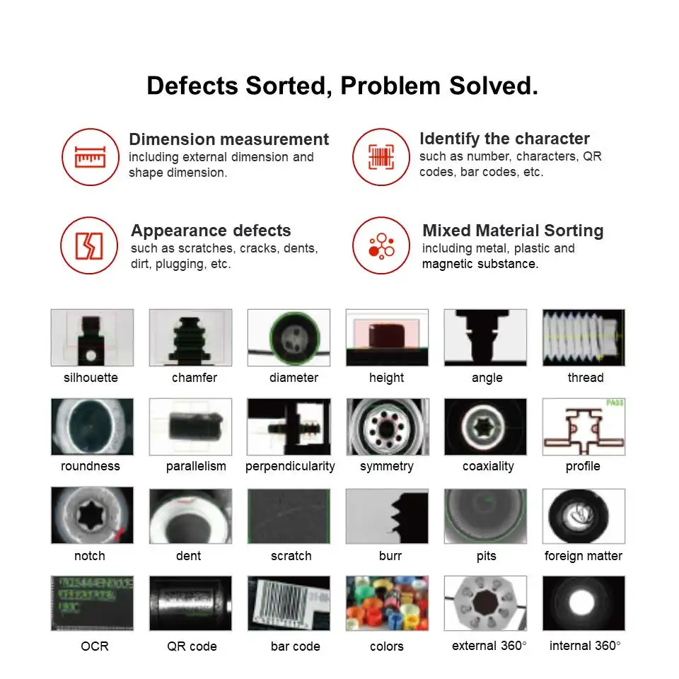
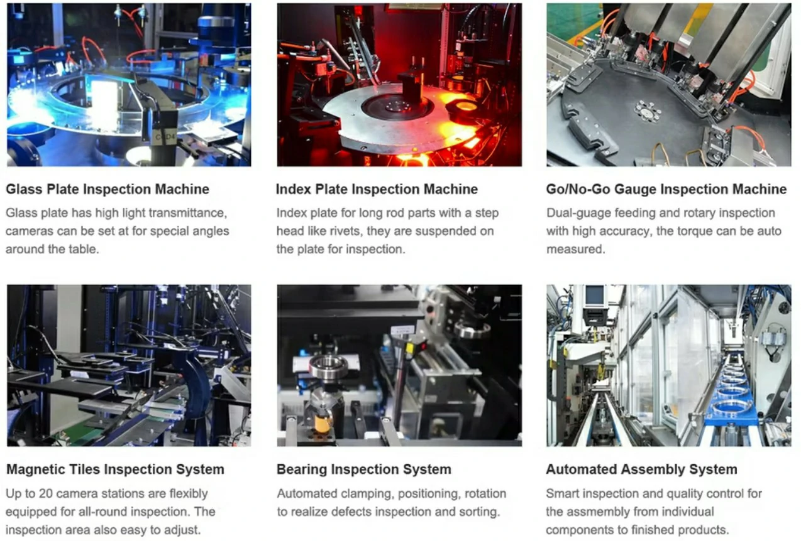
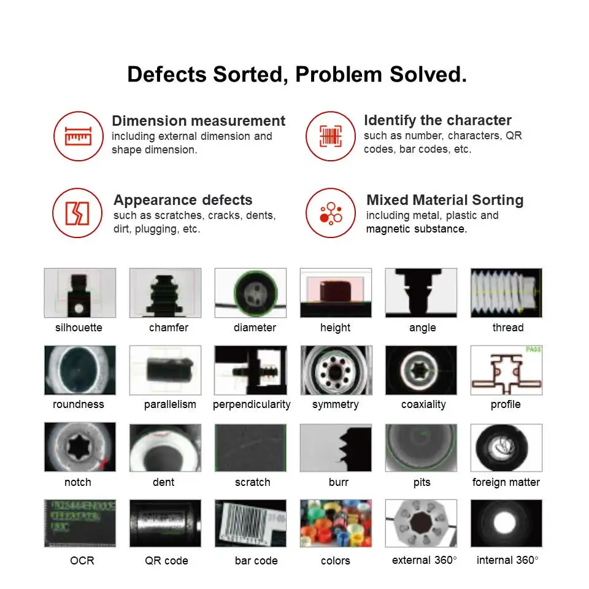

Specifications
Machine Name: Washers Inspection Machine
Detectable Range: 360°
Detection Speed: 200-1200 pieces/min
Detection Accuracy: ±0.01mm
Inspection Items: Size, Inner Hole Blockage, Aperture Size, Radian, Poor Coating, Pressure Scratches, Burrs, Nicks, Edge Chipping, Scratches, Crushing, Mixing, Paint Peeling, Height, Dent, Symmetry, Contour, Color, Etc.
Optional Configuration: Top View, Side View, Bottom View, Top View (According to The Inspection Items Increase or Decrease Camera Station)
Introduction
The **Washers Inspection Machine** is an automatic visual inspection machine with a rotary table for the dimensional and surface inspection of washers and generic items made of rubber, plastic, PTFE, and other materials. The inspection machines have many operational characteristics in common and offer great value for money. Artificial Intelligence software can be added upon a customer’s request and can be installed remotely at any time.
The feed system loads the parts onto a conveyor belt, then a motorized diverter transfers them onto a rotary glass table. From this point on, every single part is inspected for defects and dimensional accuracy by a series of dedicated vision inspection stations.
Benefits
- Single-Person Operation: The machine is designed to be operated by a single person, enabling automated inspection compared to the manual process.
- Energy-Efficient Components: The machine incorporates electric and pneumatic components that are designed to consume less power.
- Multiple Setups for Different Washer Models: The machine supports the configuration of multiple setups, allowing for seamless changeover to different models of washers.
- Multi-Level Access: The machine includes a multi-level login feature that provides authorized personnel with access to machine settings and all inspection batch reports.
- Automatic Report Generation and Database Logging: The machine automates the generation of inspection reports and is able to log the reports to the database.
Our Inspection System automates the inspection process, eliminating manual inspection errors. This system is capable of inspecting seals at a rate of 200-1000 pieces per minute.
The operator loads the seals onto the bucket conveyor feeding system, which then feeds them to the inspection system in an aligned manner through a conveyor. Images are captured from various angles and positions (Top, Side, and Bottom using a flipping mechanism) for analysis.
The collected images are processed using custom image processing algorithms. These algorithms enable the software to distinguish between acceptable (OK) and defective (Not OK) parts. Any rejected parts are directed to a designated rejection bin using a pneumatic ejector, while the accepted parts are collected at the end in a good bin.
The Power of AI in Inspection
What makes Openex's inspection machines unique is the innovative Artificial Intelligence software (AIs), which twists the traditional image processing methods based on manually set thresholds. With AIs, the operator just needs to collect a series of significant samples that well represent the range of defects to be found. Thanks to the Machine Learning procedure, the machine can be quickly trained to discriminate and classify defects according to the user's needs.
This new approach based on Artificial Intelligence has been proven more efficient because it is independent of the environment and process variables that require continuous threshold adjustments. With AIs the machine is able to identify “objects” (with defined shapes) and / or surface defects (with undefined shapes) just by looking at sample images.
 



AI-combined Solutions
With multi-sensor data fusion, advanced image processing, modeling, simulation and optimisation, self-developed software and AI algorithms, Openex Intelligence provides stable, efficient and accurate inspection solutions to meet customers' various demands, needs, and wants.
Openex Automation
Openex Automation is a technological-driven machine vision automation company under Openex Group. The company specializes in the R&D and production of AI-powered visual inspection machines, robotic integration and industrial automation systems.
Certification
Our company has passed strict CE and ISO certification, and continues to provide customers with high-quality equipment.
Team & Exhibition
With the spirit of integrity, innovation, and excellence, Openex Intelligence is dedicated to providing the first-class automation products and services. Our experienced software and hardware engineers of Openex Intelligence R&D team bring your ideas from design to implementation.
Honor & Patents